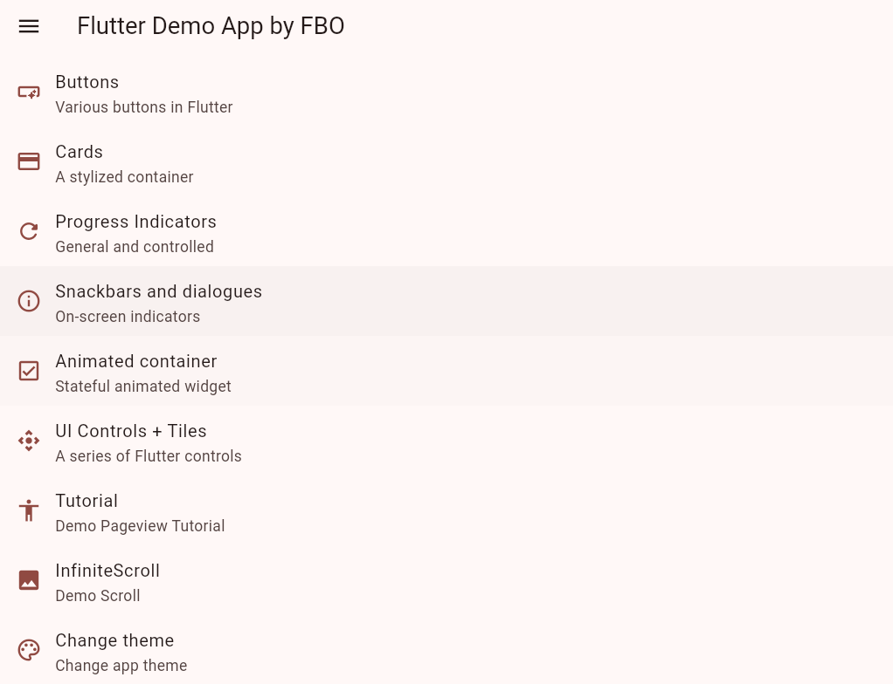
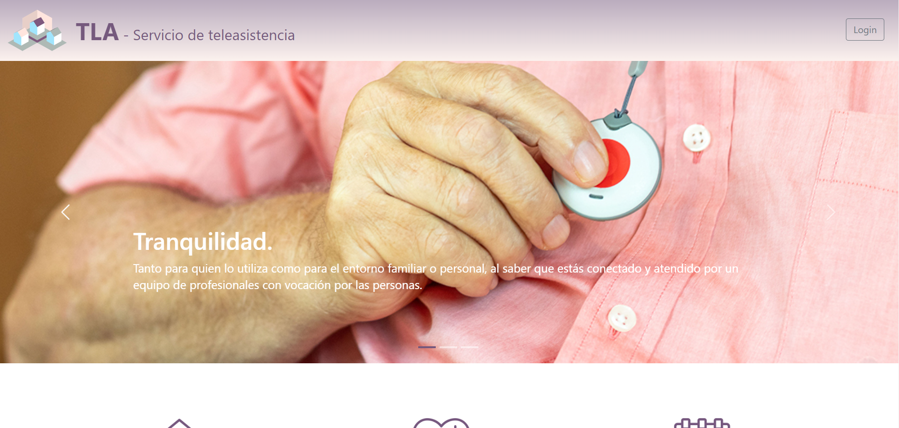

👨💻 Soy un desarrollador de aplicaciones multiplataforma recientemente graduado con una
sólida formación tanto en desarrollo multiplataforma como en desarrollo web, adquirida a través de un
programa de formación dual.
📚 Mi pasión por el aprendizaje continuo me impulsa a mantenerme actualizado con las últimas tendencias
y tecnologías en el ámbito del desarrollo de software. Durante mi formación, he adquirido habilidades
prácticas en diversas tecnologías y lenguajes de programación, lo que me permite abordar proyectos con una
perspectiva amplia y adaptable.
🚀 Me considero una persona entusiasta y comprometida, siempre en busca de nuevas ideas y desafíos que
me permitan crecer y evolucionar profesionalmente.
💼 Si buscas un desarrollador con dedicación, ganas de aprender y capacidad para trabajar en equipo,
estoy seguro de que mi perfil cumplirá tus expectativas.
Una demostración de una aplicacion multiplataforma desarrollada con Flutter


Contribución a un proyecto que consiste en el diseño, creación y explotación de una plataforma software formada por una aplicación web y una aplicación móvil. Esta plataforma permite a los alumnos del módulo de Teleasistencia realizar las prácticas necesarias para su titulación.

🌐 Social